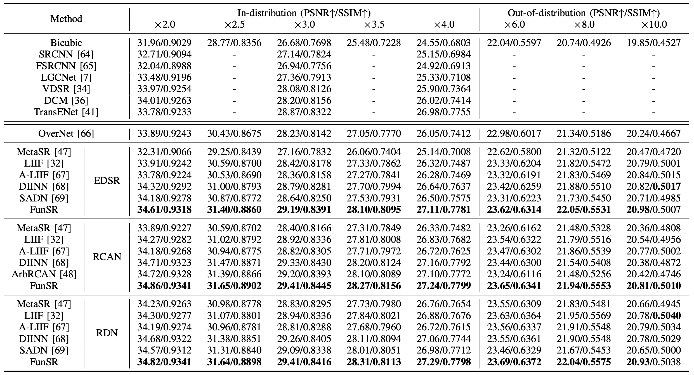
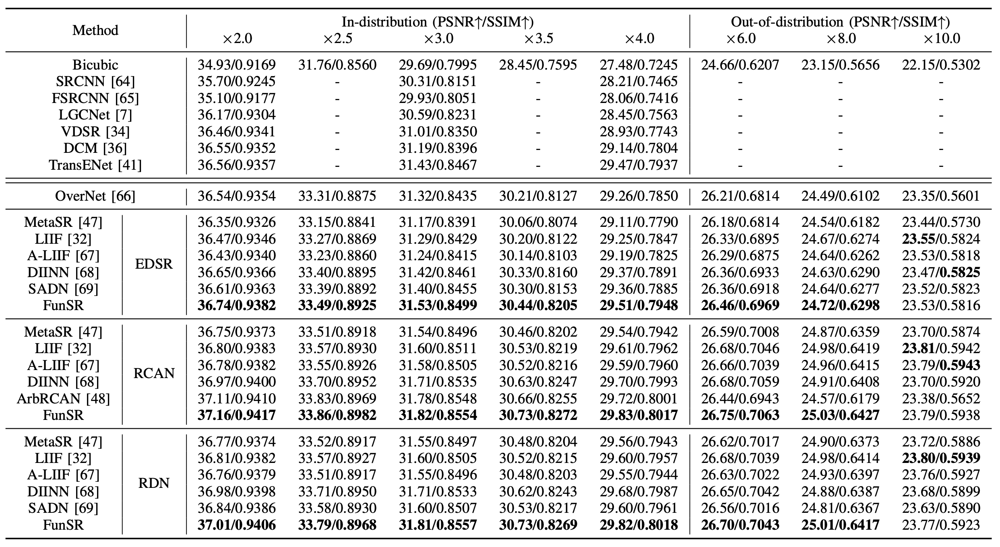

|
R1: Benchmark on UCMecred
The results of FunSR versus other comparison methods on the UCMerced Dataset are shown in the Tab., with the best performance shown by a bold number.
We just show the upscale factor of x2.0, x2.5, x3.0, x3.5, x4.0, x6.0, x8.0, and x10.0 for simplicity.
FunSR nearly achieves the highest performance in terms of PSNR and SSIM across all backbones and upscale factors.
Specifically,
FunSR outperforms the state-of-the-art fixed magnification transformer-based SR method TransENet (26.98/0.7755) by 27.11/0.7781, 27.24/0.7799, and 27.29/0.7798 on PSNR and SSIM under x4 magnification utilizing EDSR, RCAN, and RDN image encoders, respectively.
FunSR has also shown comparable performance with continuous image SR algorithms over different backbones for in-distribution and out-of-distribution training magnifications.

|
R2: Benchmark on AID
We conduct comparison experiments on the AID dataset to further validate FunSR's effectiveness.
Unlike the UCMerced dataset, this one is larger in size and has more scene categories, totaling 30.
The following Tab. displays the overall results of various methods on this dataset.
It can be seen that, when compared to other approaches, FunSR produces the best results on the majority of magnifications presented across different image encoders.

|